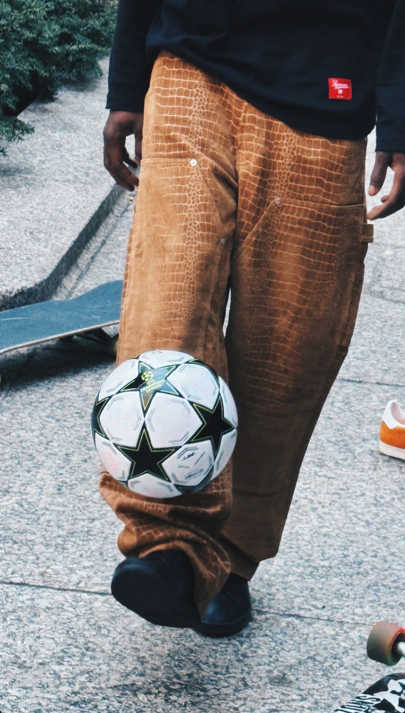

La sneaker est fatiguée
Pendant quinze ans, elle a tout écrasé sur son passage : le costume, le mocassin, l'idée même de s'habiller. Mais l'empire de la sneaker montre enfin des signes de fatigue. Et sa chute raconte bien plus qu'un changement de goût : c'est l'histoire d'une mode devenue marché, puis bulle, puis lassitude.

La fin d'un règne
La sneaker avait tout gagné : elle s'était imposée au bureau, au mariage, sous le costume, partout. Mais à force d'être partout, elle a perdu ce qui la rendait spéciale. Quand tout le monde a la paire rare, elle n'a plus rien de rare. Le hype s'est transformé en lassitude.
Ce basculement était presque inévitable. Une mode qui gagne tout finit toujours par s'user : elle devient la norme, et la norme n'excite personne. Ce qui était un signe de style est devenu un réflexe, et le réflexe, dans la mode, c'est la mort lente du désir.
Il faut se souvenir d'où l'on vient. Pendant quinze ans, sortir une nouvelle paire était un événement, une file d'attente, une fierté. La basket avait détrôné tous les autres souliers, imposé son confort et sa décontraction partout. Ce règne a été total — et c'est précisément parce qu'il a été total qu'il touche à sa fin.
Le retour du soulier
Mocassins, derbies, bottes, ballerines : les chaussures qu'on croyait ringardes reviennent, et avec elles une certaine idée de l'élégance. Après des années de confort total, on redécouvre le plaisir de bien se chausser.
Ce retour n'est pas qu'une question de style, c'est une question de distinction. Quand tout le monde porte la même basket, ressortir un soulier devient un acte de singularité. L'élégance redevient audacieuse précisément parce qu'elle était devenue rare.
Quand la basket est devenue une action en bourse
Pour comprendre la fatigue de la sneaker, il faut regarder son argent. Pendant des années, la basket n'était plus seulement un vêtement : c'était un placement. Des plateformes de revente ont transformé des paires en actifs financiers, cotés, spéculés, revendus à prix d'or. Acheter des sneakers, pour certains, n'avait plus rien à voir avec l'envie de les porter — c'était un investissement, un calcul, un pari.
Ce marché a atteint des sommets vertigineux. Des paires s'échangeaient pour le prix d'une voiture, des gens faisaient profession de revendre ce qu'ils n'avaient même pas déballé. La basket avait quitté le monde de la mode pour celui de la finance.
Comme toute bulle, celle-ci a fini par se dégonfler. Les drops qui déclenchaient des émeutes laissent des stocks invendus, les cotes s'effondrent, les reventes ralentissent. On a tellement voulu faire de la basket un investissement qu'on a oublié d'en faire un objet de désir. Et un marché qui ne fait plus rêver est un marché qui meurt.
Le coût caché de l'abondance
Derrière la montagne de paires, il y a aussi une réalité moins glamour : celle d'une production de masse, polluante, difficile à recycler. Chaque sneaker mêle des dizaines de matériaux collés, presque impossibles à séparer, donc à réutiliser. Le retour du cuir et de l'artisanat n'est pas qu'esthétique, il répond aussi à une lassitude du jetable.
On redécouvre la valeur de l'objet qui dure, qu'on répare, qu'on garde des années. Une belle paire de souliers se ressemelle, se cire, se transmet presque. Dans ce sens, le retour du soulier n'est pas seulement plus chic : il est parfois, aussi, plus durable.
La sneaker n'est pas morte
Attention : il ne s'agit pas d'un enterrement. La basket restera un pilier du vestiaire, un classique parmi d'autres. Elle n'a pas disparu, elle a juste cessé de régner seule. Elle redevient une option, pas une évidence — et c'est sans doute plus sain ainsi.
Les plus beaux modèles, les plus sincères, les plus intemporels traverseront la crise sans mal. Ce sont les paires nées du pur calcul, du hype sans âme, qui disparaîtront. La vague reflue, mais elle laisse derrière elle quelques classiques qui, eux, ne bougeront plus.
Le vrai style, c'est le choix
Ce que raconte ce retour, c'est la fin de l'uniforme. On ne se chausse plus par réflexe mais par envie, selon le moment, l'allure, l'humeur. La vraie élégance n'a jamais été une paire, c'est une décision.
Et c'est peut-être la meilleure nouvelle de toutes. La fin du règne de la basket, ce n'est pas le triomphe d'un autre soulier : c'est le retour de la liberté de choisir. On redécouvre qu'il existe mille façons de se chausser, et qu'aucune ne devrait s'imposer à toutes les autres.
La sneaker a conquis le monde, puis elle l'a lassé. Et c'est dans cette fatigue que renaît le style.